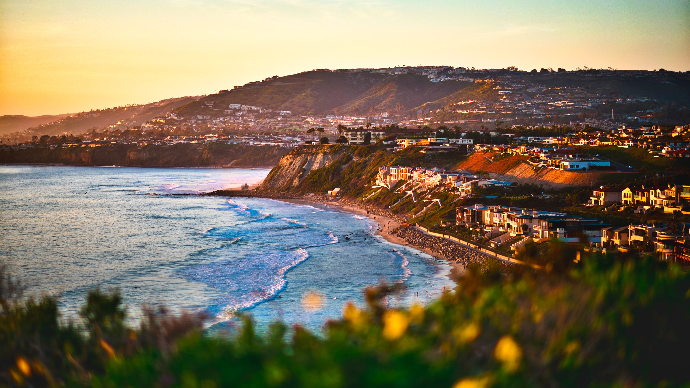
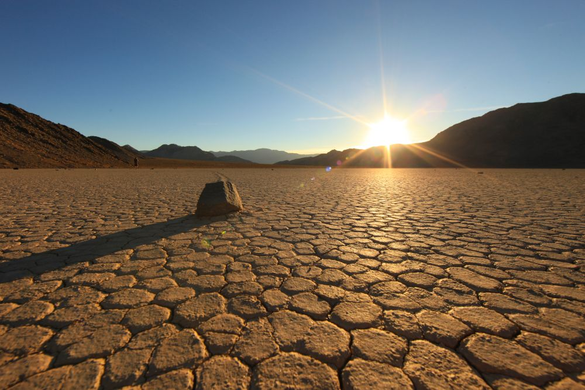
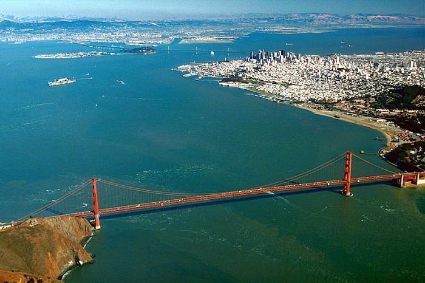
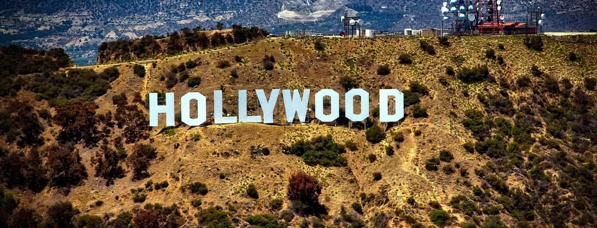
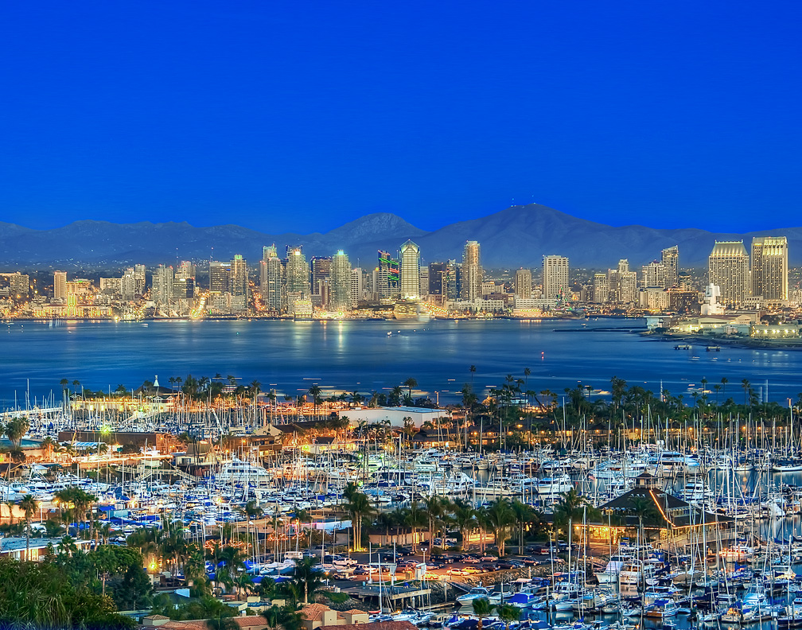
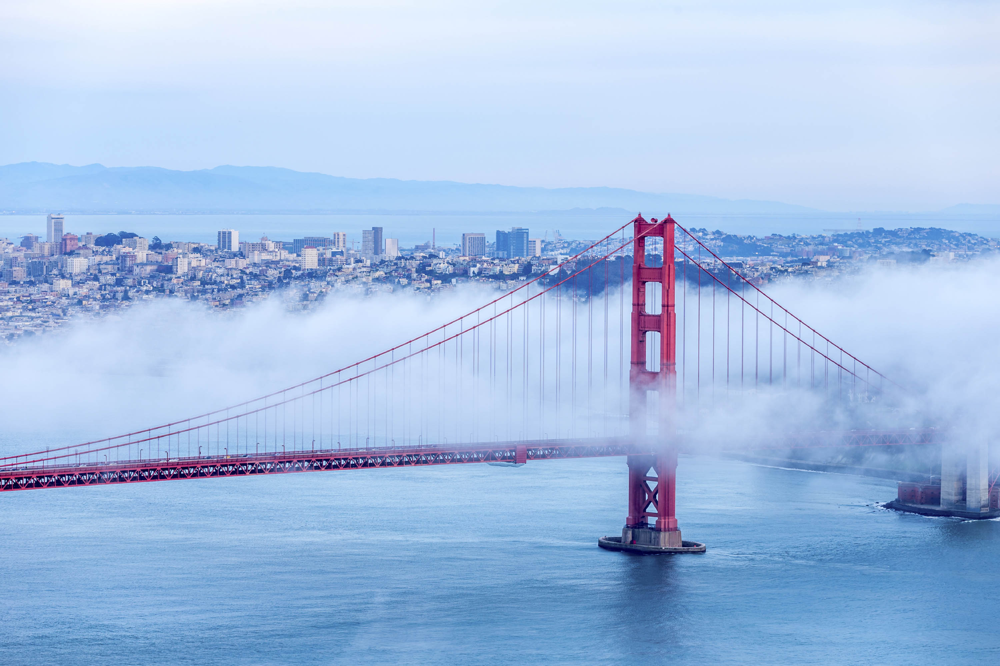

Калифорния — один из самых крупных и населённых штатов США, расположенный на западном побережье страны.
Он знаменит своими пляжами, горами, парками развлечений и высоким уровнем жизни.

Достопримечательности
Голливудский бульвар — (англ. Hollywood Boulevard) — улица в городе Лос-Анджелес, штат Калифорния,
США, на которой создана Голливудская «Аллея славы».
Долина Смерти — межгорная впадина в районе пустыни Мохаве и Большого Бассейна на западе США в штате Калифорния, к юго-востоку от горного хребта Сьерра-Невада.
В долине расположена самая низкая точка Северной Америки (36°14′ с. ш. 116°46′ з. д.HGЯO, 86 метров ниже уровня моря[1]).
Долина также включает в себя бо́льшую часть национального парка «Долина Смерти».
В долине 10 июля 1913 года зафиксирована самая высокая температура воздуха в Западном полушарии — +56,7 °C[2].

Залив Сан Франциско — Залив Сан-Франциско соединяется с Тихим океаном через пролив Золотые Ворота.
В заливе находится несколько островов, в том числе и искусственных, например, Кост-Гард.

Города
Лос-Анджелес — Это самый большой город в штате калифорния.
И второй по величине в США после Нью-Йорка город. В настоящее время Лос-Анджелес является одним из крупнейших мировых культурных, научных, экономических, образовательных центров.
Также город — один из крупнейших мировых центров индустрии развлечений в сфере кино, театра, музыки,
искусства и телевидения.

Сан-Диего — Сан-Диего расположен на западном побережье США,
у границы с Мексикой — с юга к нему примыкает
мексиканский город Тихуана

Сан-Франциско — холмистый город на северной оконечности одноименного полуострова на севере Калифорнии,
омываемый водами Тихого океана и залива Сан-Франциско.
Он славится своими туманами, мостом Золотые Ворота,
канатными трамваями и красочными домами в викторианском стиле.

Сакраменто — город на западе США на месте впадения реки Американ-Ривер в реку Сакраменто,
столица штата Калифорния и округа Сакраменто,
основан в декабре 1848 года Джоном Саттером-младшим — сыном иммигранта из Швейцарии,
который основал первое белое поселение в этом регионе.